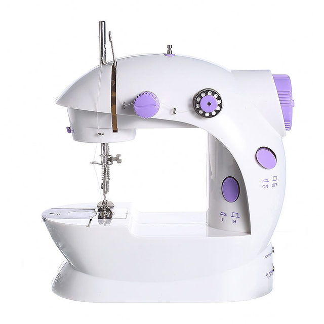
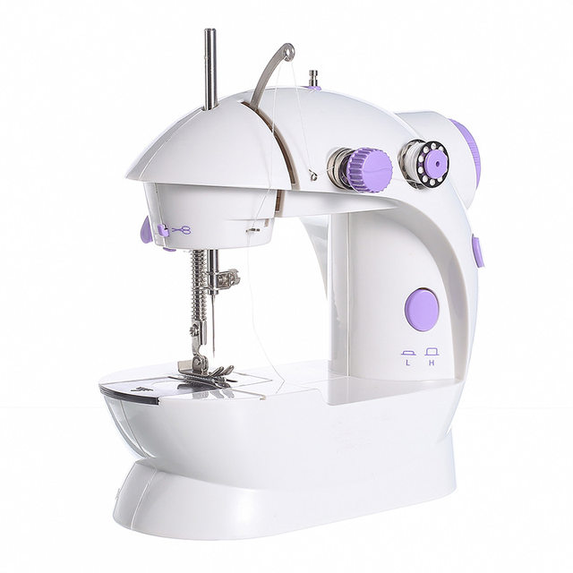
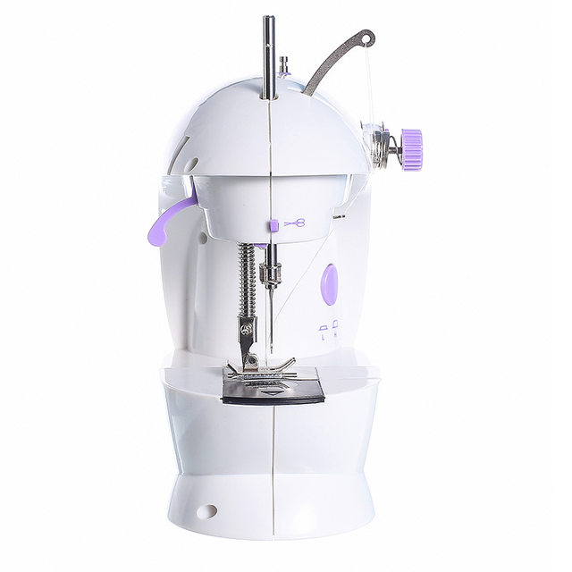
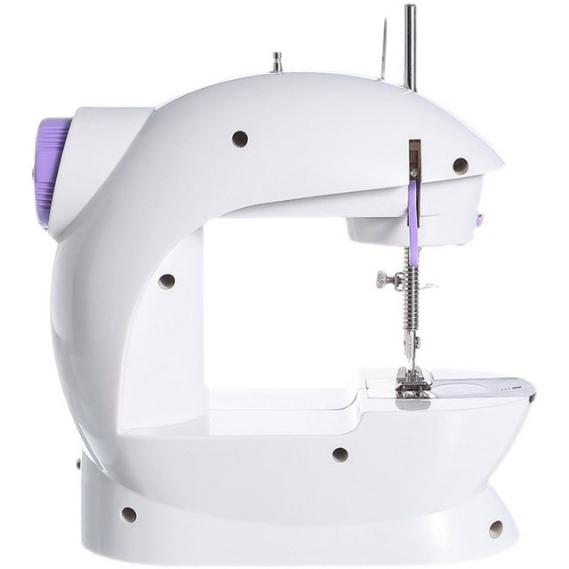
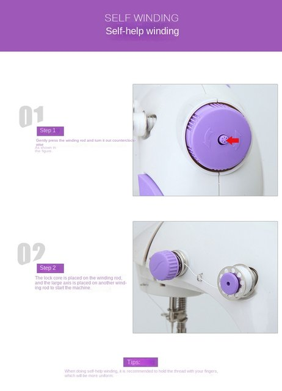
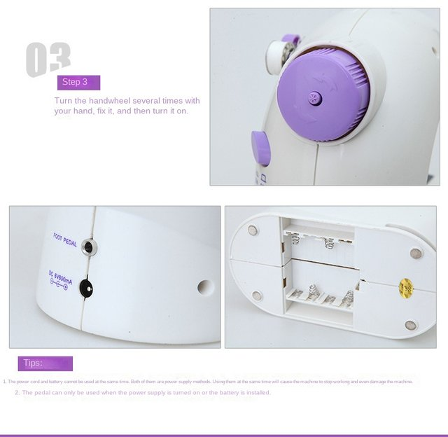
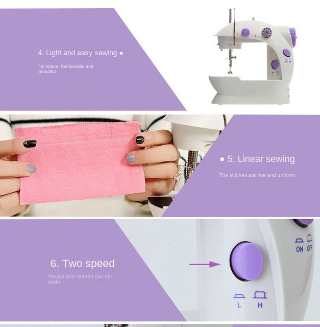
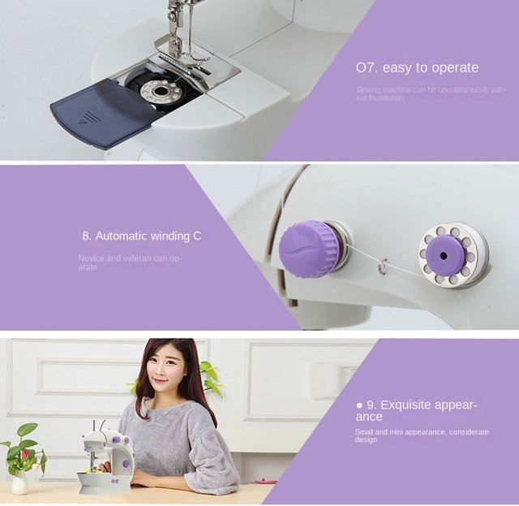
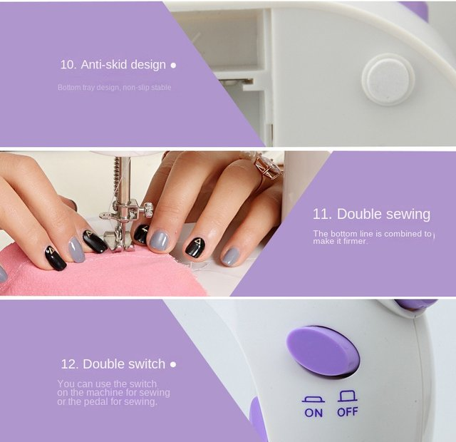
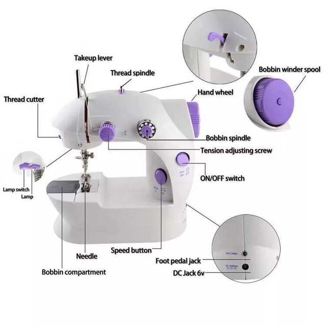

• Compact Mini Design :This electric sewing machine boasts a compact mini design, making it perfect for small spaces or on-the-go use. Its portable nature allows you to take it with you wherever you go, ensuring you can always have your stitching needs met.
• Double Speed Feature :Equipped with a double speed feature, this machine allows for quick and efficient sewing, saving you time and energy in your crafting projects.
• Night Light Function :The machine comes with a built-in night light function, allowing you to sew comfortably even in low light conditions, enhancing the machine's versatility and convenience.
• Foot Pedal Operation :Designed with a foot pedal operation, this sewing machine offers hands-free operation, providing a more relaxed and comfortable sewing experience.
• Overlock Stitch Formation :The machine uses an overlock stitch formation method, ensuring strong and secure stitches, enhancing the quality of your sewing projects.
• Walking Foot Feeding Mechanism :The walking foot feeding mechanism ensures smooth and even feed of the fabric, improving the accuracy and consistency of your stitching.
Bullet Points:
1.【Cute and Portable】This small sewing machine is suitable for children to learn sewing techniques, the sewing machine is equipped with bright LED lights, which are very interesting and cute, and are convenient for children to carry.
2.【Without Hurting Hands】The portable sewing machine is smooth and wear-resistant, especially it is designed with a led light, which will not hurt your child's hands even in night.
3.【Easy For Using】Gently press and hold the winding rod, turn it out counterclockwise, put the lock cylinder on the winding rod, and place the large spool on the other winding rod to start the machine.
4.【Improved Electric Design】This two-speed sewing machine is designed to make sewing easy for beginners - it has user-friendly features like on/off switch, adjustable stitchs and length, pre-threaded spool, and more.
5.【Helps Develop Creativity】Use the small sewing machine to effectively develop your child's creativity, fine motor skills, problem-solving, finger dexterity and concentration.
Description:
This of Small Sewing Machine is designed for entry-level, beginning sewing and quick fix projects. Offering multiple stitchs options, these machines are perfect for kids, dorm and apartment living, and traveling.
It tackles household sewing tasks including hemming, Mending, crafts, scrapbooking and paper crafting, etc.
In order to achieve the best stitching results, fabric weights, quality of thread, tension settings and checking your proper threading both upper and lower may be necessary to ensure the best stitchs results.
Features:
Weight: about 900g
Color box size: 22.5x13.5x21cm/8.8*5.3*8.3inch
Model: 202 Household Electric Sewing Machine
Material: High-quality ABS, POM, PC, wire, plate
Power: 4.8W.
How to Use:
1. Pull out the thread a little longer, at least 10 cm or more.
2. Pass the lower thread and the upper thread together from the middle of the presser foot to the back.
3. Put the fabric under the presser foot and lower the presser foot.
4. Plug in the power and turn it on, it will automatically sew, and then press it to stop, or plug in the foot pedal to automatically sew, press it, and the sewing will be released and stopped.
5. After sewing, lift the presser foot, turn the hand wheel back and forth, slowly take out the fabric, and then cut it.
Note:
1. When inserting the power supply or replacing the needle, please turn the power supply to the off position.
2. Please keep this machine out of the get of children. If children use this machine, they must be monitored by someone.
3. After use, put the switch in the off position and unplug the power cord.
4. Do not dismantle or modify the machine.
5. Do not turn on the power switch when the bottom thread surfaces has been installed and the machine is not installed with cloth.
6. Before starting to sew each time, please turn the hand wheel to make the needle thread penetrate the fabric (the hand wheel is smoother and then turn on the machine) to avoid problems caused by the collision of the needle.
7. When the machine is stuck after the thread is stuck or the bobbin sleeve is out of position or stuck due to other reasons (that is, the machine does not turn or the handwheel does not turn after turning on the machine), the power supply should be cut off immediately, and it must be straightened before turning on the machine, otherwise it will be damaged. Machine and power transformer.
8. Please deal with the outgoing fault according to the "regular fault". If it cannot be solved, please contact the dealer of your machine.
9. Ships without battery.









